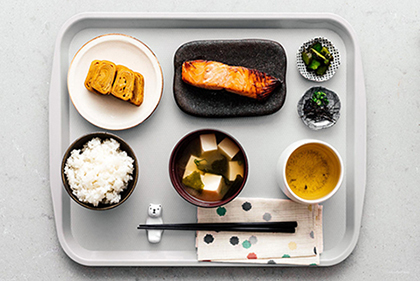
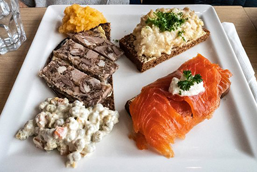
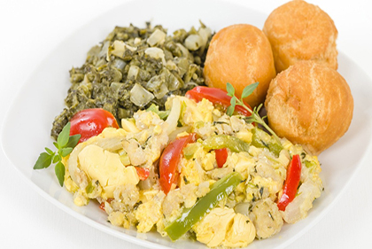

Qualcuno dice che la colazione è il pasto più importante della
giornata.
Fra tutte le scelte che si possono fare per una buona colazione,
la meno tipica è il pesce;
ecco quattro idee per fare una colazione a base di pesce prendendole dai paesi
che più lo prediligono.
Giappone
Il pesce è molto quotato in Giappone a colazione: il
salmone al vapore,
affumicato o crudo viene spesso accompaganto da tofu, verdure al vapore,
l’immancabile riso in bianco, e ovviamente, una tazza di te verde.

Islanda
In Islanda la tradizione impone una serie di pietanze davvero poco
presenti nel resto del mondo: carne di testa di pecora preparata in gelatina, trota affumicata,
purè di pesce, insalata di piselli verdi e purè di rape.

Giamaica
L'appetitoso piatto nazionale della Giamaica è l'ackee: pesce salato,
che combina salati, dolci e speziati per una deliziosa miscela di sapori e consistenze
ad ogni boccone. Aglio, cipolla, pomodori, scalogna e peperoni sono saltati assieme al pesce.

Svezia
Gravlax si traduce in "salmone da trincea", descriveva il salmone che
veniva conservato seppellendolo nella sabbia a fermentare. Ora, è più come seppellire il
salmone in una tomba fatta con una teglia e un mucchio di sale e zucchero e poi messo
in frigo a stagionare.